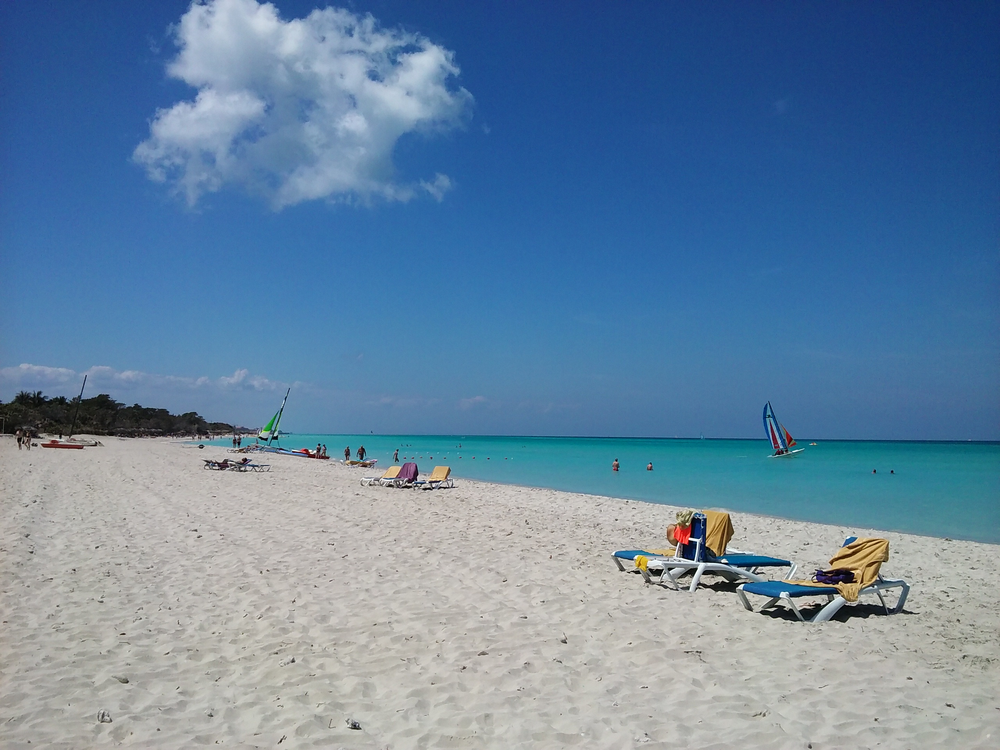
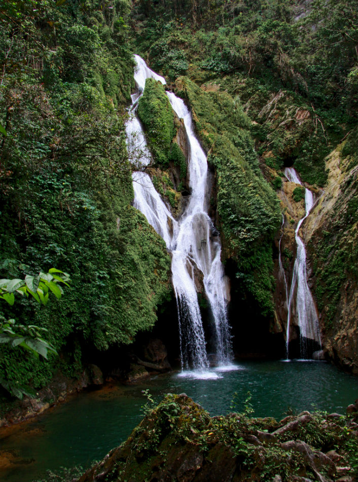

Natural Landscapes
Cuba is more than just vibrant streets and classic cars—it’s a sanctuary of untouched beauty, where nature pulses with rhythm and resilience. From the mist-draped mountains of Viñales to the sun-drenched coral reefs of Jardines de la Reina, this island invites you to lose yourself in landscapes that feel utterly timeless. Explore lush forests teeming with endemic birds, glide through mangrove tunnels, and marvel at waterfalls that tumble into emerald pools. Whether you crave serenity or adventure, Cuba’s natural wonders offer a breath of fresh air and a glimpse into a world where wildness thrives.

Cuban Beaches: Turquoise and Tranquility
Cuba boasts over 3,500 miles of coastline and more than 430 beaches, each offering its own slice of paradise. From the powdery white sands of Varadero to the secluded serenity of Playa Paraíso in Cayo Largo del Sur, these shores are perfect for sunbathing, snorkeling, or simply soaking in the Caribbean breeze. The coral reefs of Jardines de la Reina, a protected marine park, are among the healthiest in the region, teeming with vibrant fish, sea turtles, and reef sharks. Whether you're diving into underwater caves or sipping coconut cocktails on the sand, Cuba’s beaches are a balm for the soul.
Forests and National Parks
Cuba is home to 14 national parks and nearly 200 protected areas, covering everything from misty mountain ranges to dense tropical forests. Explore the Viñales Valley, a UNESCO World Heritage Site known for its dramatic limestone mogotes and tobacco farms. Hike through Topes de Collantes in the Escambray Mountains, where waterfalls and orchids await around every bend. Or venture into Alejandro de Humboldt National Park, one of the most biologically diverse ecosystems in the Caribbean, offering trails through untouched rainforest and glimpses of rare wildlife.
Cuban Biodiversity
Cuba is a biodiversity hotspot, with over 6,000 plant species—half of which are found nowhere else—and a rich array of wildlife including manatees, crocodiles, and more than 370 bird species6. Its unique location at the crossroads of the Atlantic, Caribbean, and Gulf of Mexico makes it a vital ecological hub. The island’s coral reefs, mangroves, and wetlands not only support marine life but also protect coastal communities from erosion and storms. Conservation efforts have kept many of Cuba’s ecosystems healthier than those in neighboring regions.